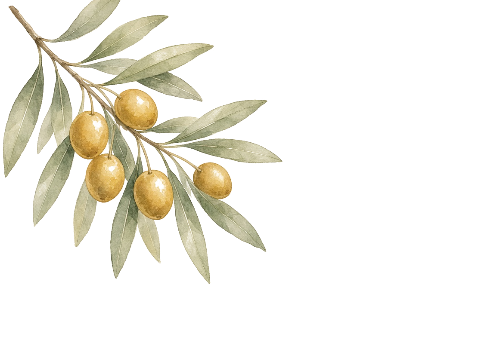
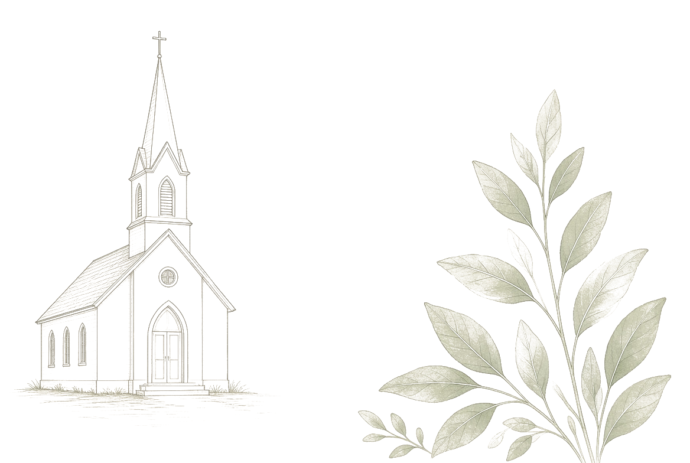
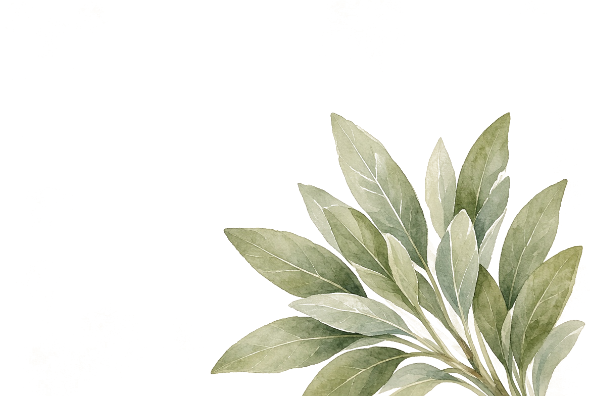

STEP 01
등록카드 작성
등록카드를 작성하여
안내위원 또는 교역자에게
제출해 주세요.



WELCOME TO OUR CHURCH
“환영하고, 축복합니다.”
하늘사랑교회에서 함께 예배하고, 믿음의 여정을 걸어가요.
STEP 01
등록카드를 작성하여
안내위원 또는 교역자에게
제출해 주세요.
STEP 02
예배 후 1층 카페에 있는
새가족실로 오시면
안내해 드립니다.
STEP 03
5주간의 새가족 만남을 통해
하늘사랑교회를 알아가며
함께 신앙의 기초를 세웁니다.
STEP 04
5주간의 만남을 마치면
하늘사랑교회 등록교인이
됩니다.
담당교역자와 공동체로 연결되어 신앙생활을 위한 돌봄을 받습니다.
하늘사랑교회가 제공하는 모든 양육프로그램에 참여하실 수 있습니다.
☎ 새가족 등록 문의 041-548-1758